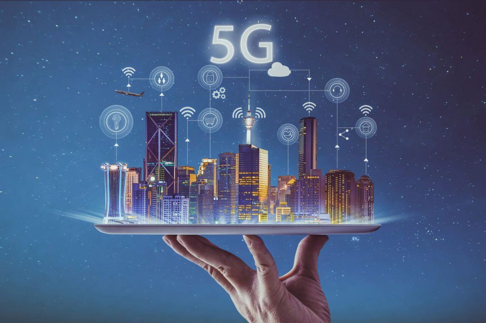

INTRODUÇÃO
COMO FUNCIONA O 5G

QUAIS OS BENEFÍCIOS DAS REDES 5G
DIFERENÇAS ENTRE O 4G E O 5G
CONCLUSÃO
Fontes de pesquisa:
Fontes:
https://www.portaldaindustria.com.br/industria-de-a-z/5g-no-brasil/
https://www.kaspersky.com.br/resource-center/threats/5g-pros-and-cons
Imagens:
https://www.mundoconectado.com.br/mobile/preciso-trocar-o-chip-do-celular-para-usar-o-5g-puro/
https://www.mobilit.com.br/desafios-e-impactos-da-tecnologia-5g-para-empresas/